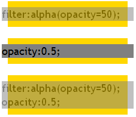
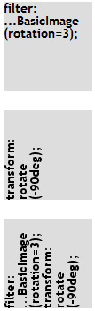

BT9011: 只有 IE 支持 CSS Filter
标准参考
无
问题描述
Filter 为微软的专有技术，并被应用到 IE4.0 及以上的 IE 浏览器中，所以只有 IE 支持。其他浏览器中对 Filter 无任何效果。调用 Filter 对应的 DOM 对象将会出错。
造成的影响
若仅仅考虑 IE 浏览器而使用了 Filter 技术，则在其他浏览器中不会有任何效果展现，并且 Filter 可通过 Element.style.filter 读写，但也只有 IE 支持，在其他浏览器中会报错导致 JavaScript 代码停止运行。
受影响的浏览器
| IE4.0 及以上版本的 IE 浏览器 |
|---|
问题分析
IE4.0 以上版本的 IE 浏览器中可以通过 CSS 在网页中应用多种多媒体样式的视觉效果，这就是微软的 Filter 技术。随着 IE 版本的增加，并在各版本中不断的加强 Filter 效果。通过将 Filter 与脚本的结合，可以在页面中实现各种复杂的特效，如半透明、阴影、投影、遮罩、模糊、渐变、波浪、图片翻转等效果。
关于 Filter 的列表，请参见 MSDN：Visual Filters and Transitions Reference。
Filter 通过 'filter' 特性在 HTML 元素上生效。'filter' 特性的值为一组类似函数调用的字符串。可以如其他 CSS 特性一样定义在 style 属性中。
<ELEMENT STYLE="filter: progid:DXImageTransform.Microsoft.filtername(sProperties)" >
同时，也可以在一个 'filter' 特性内设置多组不同的 Filter，以空白符相隔。
<ELEMENT STYLE="filter: progid:DXImageTransform.Microsoft.filtername(sProperties) progid:DXImageTransform.Microsoft.filtername2(sProperties)" >
关于 Filter 的更多资料，请参考 MSDN Filters and Transitions 中的内容。
许多 Filter 中的特效均已进入了 CSS3 草案，并在新版的非 IE 浏览器中得到了很好的支持。下面列举几个简单的范例：
1. 半透明效果：
<body style="margin:20px;"> <div style="background:gold; width:200px; display:table; font:18px 'Trebuchet MS';"> <div style="background:gray; filter:alpha(opacity=50); margin:10px -10px; position:relative; zoom:1;">filter:alpha(opacity=50);</div> </div> <br /> <div style="background:gold; width:200px; display:table; font:18px 'Trebuchet MS';"> <div style="background:gray; opacity:0.5; margin:10px -10px; position:relative; zoom:1;">opacity:0.5;</div> </div> <br /> <div style="background:gold; width:200px; display:table; font:18px 'Trebuchet MS';"> <div style="background:gray; filter:alpha(opacity=50); opacity:0.5; margin:10px -10px; position:relative; zoom:1;">filter:alpha(opacity=50); opacity:0.5;</div> </div> </body>
这段代码在各浏览器中效果如下：
| IE6 IE7 IE8 | Firefox Chrome Safari Opera |
|---|---|
|  |  |
IE 使用 'filter:alpha(opacity=50);' 通过 Filter 的 alpha 通道滤镜使元素半透明，但元素必须触发 hasLayout 特性。
非 IE 浏览器使用 'opacity:0.5;' 这个 CSS3 草案中的 'opacity' 特性使元素半透明。
所以同时使用 'filter:alpha(opacity=50);' opacity:0.5; 即可保证在所有浏览器中呈现出半透明效果。
2. 文字阴影效果：
<div style="font:bold 24px 'Trebuchet MS'; position:relative; height:30px; background:#ddd;"> <span style="position:absolute; z-index:1; color:#666; filter:shadow(color=#666666, direction=135, strength=1) progid:DXImageTransform.Microsoft.Blur(pixelRadius=2, direction=135);">filter:shadow(...);</span> <span style="position:absolute; z-index:2;">filter:shadow(...);</span> </div> <br /> <div style="font:bold 24px 'Trebuchet MS'; position:relative; text-shadow: #666 3px 3px 3px; height:30px; background:#ddd;"> text-shadow:...; </div> <br /> <div style="font:bold 24px 'Trebuchet MS'; position:relative; text-shadow: #666 3px 3px 3px; height:30px; background:#ddd;"> <span style="position:absolute; z-index:1; color:#666; display:none; display:block\9; filter:shadow(color=#666666, direction=135, strength=1) progid:DXImageTransform.Microsoft.Blur(pixelRadius=2, direction=135);">text-shadow:...; filter:shadow(...);</span> <span style="position:absolute; z-index:2;">text-shadow:...; filter:shadow(...);</span> </div>
这段代码在各浏览器中效果如下：
| IE6 IE7 IE8 | Firefox Chrome Safari Opera |
|---|---|
 |
 |
IE 使用 'filter:shadow(color=#666666, direction=135, strength=1) progid:DXImageTransform.Microsoft.Blur(pixelRadius=2, direction=135);' 通过 Filter 的 调用了 shadow 和 Blur 两组滤镜使元素产生了文字阴影效果，同样地，元素必须触发 hasLayout 特性。
非 IE 浏览器使用 'text-shadow: #666 3px 3px 3px;' 这个 CSS3 草案中的 'text-shadow' 特性使元素半透明。
所以同时结合使用这里方式即可保证在所有浏览器中呈现出文字阴影效果。
3. 旋转效果：
<div style="font:bold 14px/100% 'Trebuchet MS'; width:100px; height:100px; background:#ddd; filter:progid:DXImageTransform.Microsoft.BasicImage(rotation=3);">filter:<br />...BasicImage<br />(rotation=3);</div> <br /> <div style="font:bold 14px/100% 'Trebuchet MS'; width:100px; height:100px; background:#ddd; -webkit-transform:rotate(-90deg); -moz-transform:rotate(-90deg); -o-transform:rotate(-90deg);">transform:<br />rotate<br />(-90deg);</div> <br /> <div style="font:bold 14px/100% 'Trebuchet MS'; width:100px; height:100px; background:#ddd; filter:progid:DXImageTransform.Microsoft.BasicImage(rotation=3); -webkit-transform:rotate(-90deg); -moz-transform:rotate(-90deg); -o-transform:rotate(-90deg);">filter:<br />...BasicImage<br />(rotation=3);<br />transform:<br />rotate<br />(-90deg);</div>
这段代码在各浏览器中效果如下：
| IE6 IE7 IE8 | Firefox Chrome Safari Opera |
|---|---|
 |
 |
IE 使用 'filter:progid:DXImageTransform.Microsoft.BasicImage(rotation=3);' 通过 Filter 的 调用了 BasicImage 滤镜使元素产生了旋转效果，同样地，元素必须触发 hasLayout 特性。
非 IE 浏览器分别使用了各自的私有 CSS 特性 '-webkit-transform:rotate(-90deg); -moz-transform:rotate(-90deg); -o-transform:rotate(-90deg);' 来完成这个效果。
对于选择 90 度的倍数的情况使用 BasicImage 滤镜即可，但对于旋转任意角度则需要借助功能更多的 Matrix 滤镜。
Matrix 滤镜在旋转方面需要用到 M11 M12 M21 M22 四个参数，分别代表 cos(旋转的角度)、-sin(旋转的角度)、sin(旋转的角度)、cos(旋转的角度)。但这里需要注意的是 IE 中旋转的中心点会发生变化。
例如需要一个 DIV 元素顺时针旋转 45 度，则可以编写一下代码：
<!DOCTYPE html>
<html>
<head>
<style>
body { margin: 0; }
.rorate {
position: absolute;
left: 100px;
top: 100px;
left: 80px\9;
top: 80px\9;
width: 100px;
height: 100px;
background: red;
filter:progid:DXImageTransform.Microsoft.Matrix(M11=0.7,M12=-0.7,M21=0.7,M22=0.7,SizingMethod="auto expand");
-moz-transform: rotate(45deg);
-webkit-transform: rotate(45deg);
-o-transform: rotate(45deg);
}
</style>
</head>
<body>
<div class="rorate">123</div>
</body>
</html>
所以同时结合使用这里方式即可保证在所有浏览器中呈现出旋转效果。
解决方案
由于 CSS Filter 是 IE 特有的技术，其他浏览器均不支持，所以为了最大的兼容性及标准化，应尽量避免为 IE 单独使用 Filter，如需要其某些特效，应同时考虑其他浏览器，利用非 IE 浏览器对 CSS3 草案的良好支持保证最好的兼容性。
若需要通过脚本对 Filter 对象进行操作，则应做好浏览器判断，仅在 IE 中进行此项操作，避免其他非 IE 浏览器因为脚本出错导致异常。
参见
知识库
相关问题
测试环境
| 操作系统版本: | Windows 7 Ultimate build 7600 |
|---|---|
| 浏览器版本: |
IE6 IE7 IE8 Firefox 3.6.2 Chrome 5.0.356.2 dev Safari 4.0.5 Opera 10.51 |
| 测试页面: | filter.html rotate.html |
| 本文更新时间: | 2010-08-09 |
关键字
CSS Filter CSS3 opacity rorate shadow 半透明 阴影 旋转